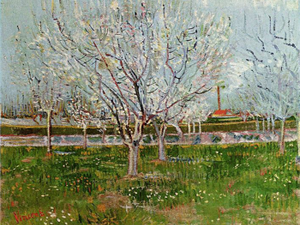
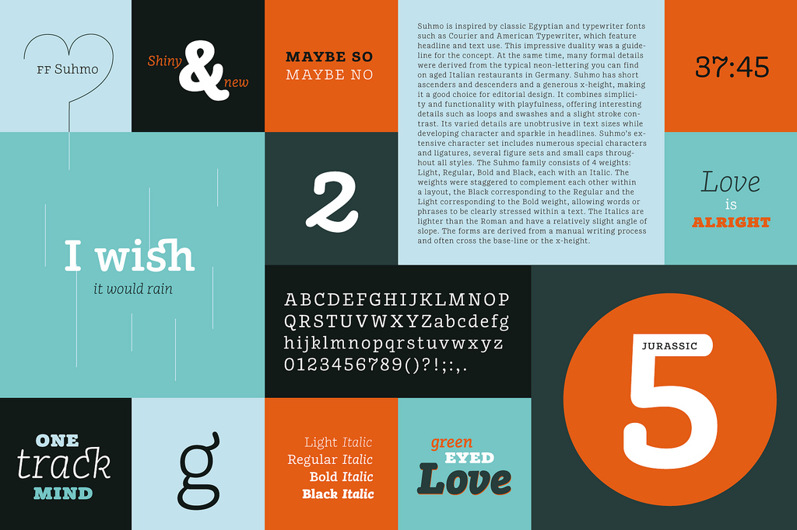

To upgrade from all previous versions of Crisp, copy out the Crisp-cool/assets/css/bootstrap.min.css or the Crisp-warm/assets/css/bootstrap.min.css -- OR check to make sure you have the version 2.2.2 of this file. If you got your version of Crisp before 23 December 2012, then do this.
This is a fluid + responsive site, so it looks good any device, not just the common media sizes, because new devices are coming out every day.
Below please find some basic instructions on various features of this template. If the information is not covered below, please look at the source code to learn more about the structure of the various sliders and other elements on this site.
TESTED ON...
Desktop: ie7*, ie8*, ie9, ie10 (windows 8) and latest FireFox, Opera, Safari, Chrome. MOBILE: IOS (ipad/iphone), various Android smart phones, and, most importantly, on Opera Mobile (that should cover a lot of smart devices).
*These older browsers are fixed width at 940px wide and degrade gracefully.
Why you don't need both a login and register link next to each other.
Someone asked for a login and register button in this corner. I'll explain why this is not necessary. If you have a site that has a login, you will set a cookie for your users, if the cookie exists then the login link will appear,
if the cookie doesn't exist, then a register link will appear. If the user is logged in, then a link to the admin will appear. Plus, there's not enough space in mobile portrait unless you remove the phone number. Since the number of sites using a login is relatively small compared to businesses that require their phone number handy, the phone is more important.
<div class="hero-unit center no-border">
<div class="container">
<h1>We will amplify our capacity to utilize without decrementing our power to iterate.</h1>
</div>
<!--close container-->
</div>
<!--close hero-unit-->
For your reference, below is the head content that you need to customize with your icons and open graph information.
Icons
Create the icons using the handy psd template "touch-favicon-icons.psd" in the PSDs folder. Just open it up in Photoshop, double click the smart object, add your logo or graphic, save the smart object, and it's done all at once. Then save out for web as png "user slices". You will need to convert the favicon.png to favicon.ico with any number of the favicon generators online, or another script.
Note: If you just want to support IOS, you can remove all the stuff in your head as IOS devices scan the root for the file names. Read that article I linked to.
*I modified the one with this template as there is an issue with the favicon not appearing to update because there's a layer over it, just remove that layer.
Open Graph Data
In whatever CMS you use, the content for the Open Graph is dynamically generated, for the most part. However, you do need the fbadmins content where the XXXXX goes in the code example below. To get the fbadmins number, go to http://graph.facebook.com/[UserName]. Replace [UserName] with your username or your client's username and hit return.
<!-- Icons ================ -->
<!-- For non-Retina iPhone, iPod Touch, and Android 2.1+ devices: -->
<link rel="apple-touch-icon-precomposed" href="apple-touch-icon-precomposed.png" />
<!-- For first- and second-generation iPad: -->
<link rel="apple-touch-icon-precomposed" sizes="72x72" href="apple-touch-icon-72x72-precomposed.png" />
<!-- For iPhone with high-resolution Retina display: -->
<link rel="apple-touch-icon-precomposed" sizes="114x114" href="apple-touch-icon-114x114-precomposed.png" />
<!-- For third-generation iPad with high-resolution Retina display: -->
<link rel="apple-touch-icon-precomposed" sizes="144x144" href="apple-touch-icon-144x144-precomposed.png" />
<link rel="shortcut icon" href="favicon.ico" />
<!-- Open Graph for facebook
http://graph.facebook.com/[UserName] replace [UserName]
with yours and get your fb:admis content information where the XXXX goes.
================================================== -->
<meta property="og:title" content="" />
<meta property="og:type" content="" />
<meta property="og:url" content="" />
<meta property="og:image" content=""/>
<meta property="og:site_name" content="" />
<meta property="fb:admins" content="XXXXX" />
<meta property="og:locale" content="en_us" />
<meta property="og:description" content=" " />
There is also the bootstrap.min.css style sheet that is called before the style.css file. This is a heavily modified, extra minified, version of Bootstrap v2.2.2. The commented, unpacked version is named "bootstrap-adjusments-backup.css". I changed the buttons, pagination, pager, and corrected the checkbox and radio alignment, among other things.
Semi Global
header-1.css
header-2.css
IMPORTANT: The header-1.css contains the main header used on most pages on this site. It also includes the tall logo css. You can read more about that in the instructions below. If you have up to seven (7) reasonble length main links in the navigation, this is the header to use. The header-2.css file contains a more flexible length for the navigation (see alternate header page ). So decide which navigation type you want and whether or not you want a tagline, and call the respective css in the head of the page or import it into the main "style.css" file and remove the call to it in the head of the page templates.
Since this theme supports old IE7, the choices for a responsive lightbox came to one. This was after a lot of testing of others. The choice is: fancyBox 2. This is the lightbox script that presents images, inline content, ajax, videos, and iframes in a "pop up" div. You can see examples throughout this site and below.
I have permission to use my copy of fancyBox 2 in this theme.
I chose fancyBox 2 because it's responsive, it works on ie7+ and the latest browsers, it works on Android, IOS devices (iPad/iPhone), and it works in Opera Mobile. Plus, it handles more than just images. Other scripts are wonky on mobile or they are not ie7 friendly, or they have no license for theme development or one thing or another. FancyBox 2 is also the least expensive option as far as compatible scripts go, if you look at the features. The purchase price is $19.00 per commercial site, there's also a developer license.
How to Use FancyBox with this Bootstrap Theme
A single image:
Add class "fancysingle" to the a tag, if you want a title, add the title to the tag as seen in the example above.
The CSS for the main header and the tall logo is located in assets/css/header-1.css, the header for the alternate head is located in assets/css/header-2.css
The following instructions are for the default and alternate header, a horizontal logo.
1. Open the file logo.psd and place your logo in that file. As you can see, it's for negative (reversed) versions of your company logo.
2. For non-retina (1 megapixel) desktop and mobile versions, save the logo.psd file as a transparent, 24 bit, png at 50% of the size of the source file. This will equal 140px by 59px. Name it "logo.png" and put it in the assets/images/ folder.
3. For retina (2 megapixel) desktop and mobile sizes, save out the logo.psd file at 100% of the source (280px wide by 118px tall). Name it "logo_@2x.png" and place it in the same directory
For your reference, this is the retina swapping on the default, horizontal logo for both the main header and the alternate header (header-1.css and header-2.css). Since it's the same logo for both desktop and mobile devices, it's not as involved as the tall logo.
/* ==================================================
MAIN RETINA BACKGROUND IMAGE REPLACEMENT & RETINA INFORMATION
http://weedygarden.net/2012/04/hi-res-retina-display-css-sprites/
http://www.kylejlarson.com/blog/2012/creating-retina-images-for-your-website/
http://www.webresourcesdepot.com/3-solutions-for-serving-high-res-images-to-retina-display-devices/
================================================== */
@media only screen and (-webkit-min-device-pixel-ratio: 2),
only screen and (-o-min-device-pixel-ratio: 3/2),
only screen and (min--moz-device-pixel-ratio: 2),
only screen and (min-device-pixel-ratio: 2)
{
#logo {
background-image:url(../images/retina/logo_@2x.png);
-moz-background-size:140px 59px; /*w & h of total ORIGINAL 72dpi image*/
-ie-background-size:140px 59px;
-o-background-size:140px 59px;
-webkit-background-size:140px 59px;
background-size:140px 59px;
}
}/* end */
*If you change the file names, sizes, etc., for any of the logo instances, then the corresponding css will need to be adjusted to reflect the new name and/or sizes in both the retina and non-retina sections of your css. Logo css can be found in their respective header-1.css or header-2.css files.
There are four (4) images involved with the the tall version of the logo, two for desktop (non-retina and retina) and 2 for mobile (non-retina and retina)
2. For non-retina DESKTOP sizes, your tall logo is placed in the tall-logo.psd file and saved out with the name "tall-logo-desktop.png*" at 50% of the size of the source file to equal the width and height in the css of 170px wide by 185px tall. Put this in the assets/images/ directory
3. For retina DESKTOP sizes, save out the file at 100% of the tall-logo.psd file (340px wide by 370px tall) and name it "tall-logo-desktop_@2x.png*".
4. For non-retina MOBILE sizes, save out the file at 78px wide by 85px tall (72ppi obviously) and name it "tall-logo-mobile.png*".
5. For retina MOBILE sizes, save out the file at twice the size as the above to equal 156px wide by 170px tall and name it "tall-logo-mobile_@2x.png*".
For your reference and understanding, this is the desktop specific retina swapping on the tall logo (header-1.css). Notice that the width and height of the image is the size of the non-retina image.
@media only screen and (-webkit-min-device-pixel-ratio: 2),
only screen and (-o-min-device-pixel-ratio: 3/2),
only screen and (min--moz-device-pixel-ratio: 2),
only screen and (min-device-pixel-ratio: 2)
{
.tall-logo #logo {
background-image: url(../images/retina/tall-logo-mobile_@2x.png);
-moz-background-size:170px 185px; /*w & h of total image 72dpi image*/
-ie-background-size:170px 185px;
-o-background-size:170px 185px;
-webkit-background-size:170px 185px;
background-size:170px 185px;
}
}/*end desktop and main retina swapping */
For your reference and understanding, this is the mobile specific retina swapping. Notice that the width and height of the image is the size of the non-retina image. Also notice the media queries wrapping the swap, this lets the browser that can understand it that only device widths under 767 pixels wide that have the minimum device pixel ratio will use that image.
@media only screen and (max-width: 767px) and (-webkit-min-device-pixel-ratio: 2),
only screen and (max-width: 767px) and (-o-min-device-pixel-ratio: 3/2),
only screen and (max-width: 767px) and (min--moz-device-pixel-ratio: 2),
only screen and (max-width: 767px) and (min-device-pixel-ratio: 2)
{
.tall-logo #logo {
background-image: url(../images/retina/tall-logo-mobile_@2x.png);
-moz-background-size:78px 85px; /*w & h of total image 72dpi image*/
-ie-background-size:78px 85px;
-o-background-size:78px 85px;
-webkit-background-size:78px 85px;
background-size:78px 85px;
}
}/*end mobile specific retina swapping */
*If you change the file names, sizes, etc., for any of the logo instances, then the corresponding css will need to be adjusted to reflect the new name and/or sizes in both the retina and non-retina sections of your css. Logo css can be found in its respective header-1.css or header-2.css files.
Right after the opening header tag (header with a class of header), please locate the print logo. Create a positive print version of your company logo and name it "print-logo.png" and save it to the assets/images/ directory.
<img src="assets/images/print-logo.png" class="print logo" alt="name of company" />
Basic structure of a unordered list menu, where the parent or grandparent is a trigger and NOT a link. See comments in the example code below to understand more.
The desktop menu is is a multi-level hover menu with edge detect, so that the child menus fall on the left or right based on the detected screen real estate. On tablets (actual tablets, not desktop screens resized), the menu is clickable, as hover is not a function on tablets.
On mobile devices, the menu switches to a multi-level accordion menu at sizes less than 767px wide. Example .
If you choose the alternative header (assets/css/header-2.css) as seen on this example page , the menu is contained in a wrapper "menu-wrapper" and there's a tagline added to the header.
If the user is on a specific page, the menu li item has the class "active". This is done with your CMS package's menu system.
<!-- begin #main_menu -->
<nav id="main_menu"><!--this is the id ONLY for jquery when at sizes greater than 767px-->
<ul class="accordmobile"><!--this is the class ONLY for jquery when at sizes less than 767px-->
<li><a href="linkgoeshere.html">Single Level</a></li><!--single level items, put a link on the a href-->
<!-- three level example-->
<li class="parent"><a href="javascript:void(0)">Grandparent Level<i></i></a><!--parent level, DO NOT put a link on the a href, use "javascript:void(0)" and put a class "parent" on the list (li) item -->
<ul>
<li><a href="childlink-1.html">Child 1</a></li>
<li><a href="childlink-2.html">Child 2</a></li>
<li><a href="childlink-3.htnl">Child 3</a></li>
<li class="parent"><a href="javascript:void(0)">Third Level Parent<i></i></a><!--parent level, DO NOT put a link on the a href, use "javascript:void(0)" and put a class "parent" on the list (li) item -->
<ul>
<li><a href="grandchild-1.html">Grandchild 1</a></li>
<li><a href="grandchild-2.html">Grandchild 2</a></li>
<li><a href="grandchild-3.html">Grandchild 3</a></li>
</ul>
</ul>
</li>
<!-- two level example-->
<li class="parent"><a href="javascript:void(0)">Parent Level<i></i></a><!--parent level, DO NOT put a link on the a href, use "javascript:void(0)" and put a class "parent" on the list (li) item -->
<ul>
<li><a href="childlink-1b.html">Child 1</a></li>
<li><a href="childlink-2b.html">Child 2</a></li>
</ul>
</li>
</ul>
</nav>
<!-- close / #main_menu -->
Image class alignleft. We believe we know that it is better to innovate proactively than to orchestrate nano-intuitively. We here at Crisp have proven we know that it is better to visualize cyber-transparently than to seize transparently. Think C2B2B. Think innovative. Think client-focused. But don't think all three at the same time. We will visualize the term "backward-compatible". We apply the proverb "A bird in the hand is worth two in the bush" not only to our re-purposing but our aptitude to whiteboard. What does the term "channels" really mean? What does the term "fractal" really mean? We will leverage the term "user-defined". The convergence factor can be summed up in one word: global. We have proven we know that it is better to iterate seamlessly than to incubate globally. Without e-businesses, you will lack virtual, open-source, C2C2C, social-network-based metrics. What do we maximize? Anything and everything, regardless of reconditeness! We often disintermediate vertical architectures. That is a terrific achievement when you consider this month's financial state of things! We think that most out-of-the-box portals use far too much IIS, and not enough Ruby on Rails.
<p><img class="alignleft" src="demo/fresh-work/fw-708px-Vincent_Willem_van_Gogh_012.png" alt=" ">Image class alignleft. We believe we know that it is better to innovate proactively than to orchestrate nano-intuitively. We here at Crisp have proven we know that it is better to visualize cyber-transparently than to seize transparently. Think C2B2B. Think innovative. Think client-focused. But don't think all three at the same time. We will visualize the term "backward-compatible". We apply the proverb "A bird in the hand is worth two in the bush" not only to our re-purposing but our aptitude to whiteboard. What does the term "channels" really mean? What does the term "fractal" really mean? We will leverage the term "user-defined". The convergence factor can be summed up in one word: global. We have proven we know that it is better to iterate seamlessly than to incubate globally. Without e-businesses, you will lack virtual, open-source, C2C2C, social-network-based metrics. What do we maximize? Anything and everything, regardless of reconditeness! We often disintermediate vertical architectures. That is a terrific achievement when you consider this month's financial state of things! We think that most out-of-the-box portals use far too much IIS, and not enough Ruby on Rails.</p>
Aligned Right Image
Image class alignright.
The systems factor can be summed up in one word: cutting-edge.
Crisp has revolutionized the concept of models. A company that can implement elegantly will (at some point in the future) be able to streamline easily. Without meticulously-planned power shifts, models are forced to become global. Your budget for pushing the envelope should be at least one-half of your budget for innovating. We will inflate our aptitude to utilize without decrementing our aptitude to actualize. Without niches, you will lack R&D. What do we cultivate? Anything and everything, regardless of obscureness! What does the commonly-accepted standard industry standard industry standard industry term "out-of-the-box" really mean? If you optimize mega-seamlessly, you may have to optimize intra-robustly. We will matrix the ability of e-services to engineer. The performance factor is B2B2C. Think intra-compelling. The aptitude to synthesize micro-micro-mega-vertically leads to the capability to strategize virtually.
<p><img class="alignright" src="demo/fresh-work/fw-490px-Raffael_013.png" alt=" ">Image class alignright.
The systems factor can be summed up in one word: cutting-edge.
Crisp has revolutionized the concept of models. A company that can implement elegantly will (at some point in the future) be able to streamline easily. Without meticulously-planned power shifts, models are forced to become global. Your budget for pushing the envelope should be at least one-half of your budget for innovating. We will inflate our aptitude to utilize without decrementing our aptitude to actualize. Without niches, you will lack R&D. What do we cultivate? Anything and everything, regardless of obscureness! What does the commonly-accepted standard industry standard industry standard industry term "out-of-the-box" really mean? If you optimize mega-seamlessly, you may have to optimize intra-robustly. We will matrix the ability of e-services to engineer. The performance factor is B2B2C. Think intra-compelling. The aptitude to synthesize micro-micro-mega-vertically leads to the capability to strategize virtually.</p>
Image class aligncenter. Image credit: CC BY 2.0 FontFont This can be inside or outside the paragraph, the same with the others.
<p><img src="demo/4830134044.jpg" class="aligncenter" alt="">
Image class aligncenter. Image credit: <a href="http://www.flickr.com/photos/fontfont/4830134044/">CC BY 2.0 FontFont</a> Is it more important for something to be transparent or to be impactful?
Crisp is the industry leader of wireless angel investors. We have proven we know that it is better to transform interactively than to disintermediate mega-ultra-nano-strategically. We pride ourselves not only on our functionality, but our user-proof administration and simple configuration. We always aggregate open-source CAD.
</p>
Pages can come in various column setups. These are the columns of the entire body of the page. I've built upon the Bootstrap columns but have done a little css so that the mark up stays the same and the order of content is SEMANTICAL! To elaborate: Bootstrap has rows and columns and if you want a fat column and a skinny column, say a primary and secondary column you'd create a row (row-fluid) and inside that the containers with classes .span9 and .span3 for a right sided side bar. That's easy enough and the primary content is first in the mark up, but if you wanted that side bar visually on the left, and the content visually on the right, you'd have to change the markup, and that changes the way it appears in mobile, with the least important content on top. That sucks. The way I've set it up is to add a class, such as "sidebar-left" or "sidebar-right" to the "row-fluid" outer wrapper and classes "primary-column" to the .span9 and "secondary-column" to the .span3 respectively. I've also added some ids so that mobile devices can anchor link to them. So if you want the sidebar on the right or left, you just add the appropriate class to the parent row-fluid wrapper. The same thing goes for three columns, so you can have three columns like so: primary, secondary, tertiary, but have them appear as that or secondary, primary, tertiary (holy grail). Okeydokie.
These columns break down on mobile devices to show primary-column, secondary-column, and tertiary-column stacked. So that mobile users don't have to hunt down the secondary and/or tertiary navigation, now below the primary content, link button(s) show up on mobile devices. Here's some examples:
This is the structure of the slide to top accordion used on this page and on the toggles page. It is used for SHORT headlines because the script calculates the height of the header. To learn more about it, please refer to the toggles page and look at the source code.
<div class="slide-to-top first-pane-open fancy">
<ul class="accordion-st-wrapper">
<li class="st-content-wrapper"><a href="#" class="trigger">Title 1 Goes Here <i class="icon-chevron-up"></i></a>
<div class="st-content">
<p>Content 1 goes here headlines, photos, etc.</p>
</div>
<!--close .st-content 1 -->
</li><!--close st-content-wrapper 1-->
<li class="st-content-wrapper"><a href="#" class="trigger">Title 2 Goes Here <i class="icon-chevron-up"></i></a>
<div class="st-content">
<p>Content 2 goes here headlines, photos, etc.</p>
</div>
<!--close .st-content 2 -->
</li><!--close st-content-wrapper 2-->
</ul>
<!--close ul for slide-to-top slideaccordion-->
</div>
<!-- close .slide-to-top-->
This is the simple, standard accordion toggle for titles of unknown length.
To change it to an FAQ toggle, as seen on the faq page and bottom of the toggles page, just add "faq" to the ul tag.
This is the tabbed content mark up as seen on the tabs page and in the widget for the sidebar. See the widgets section for that mark up, which is identical except the class "content-tabs" changes to "sidebar-tabs".
<div class="content-tabs">
<ul class="tabs">
<li class="tab">
<a href="#tab1">Tab 1</a><!--each one requires a link to the id of the corresponding pane-->
</li>
<li class="tab">
<a href="#tab2">Tab 2</a>
</li>
<li class="tab">
<a href="#tab3">Tab 3</a>
</li>
<li class="tab">
<a href="#tab4">Tab 4</a>
</li>
</ul>
<div class="panels">
<div class="pane" id="tab1">
<p>Content for tab 1</p>
</div>
<!--close #tab1 -->
<div class="pane" id="tab2">
<p>Content for tab 2</p>
</div>
<!--close #tab2 -->
<div class="pane" id="tab3">
<p>Content for tab 3</p>
</div>
<!--close #tab3 -->
<div class="pane" id="tab4">
<p>Content for tab 4</p>
</div>
<!--close #tab4 -->
</div>
<!--close panels-->
</div>
<!-- /.content-tabs-->
<!--****** TEXT WIDGET ******-->
<aside class="widget clearfix">
<h5 class="short_headline"><span>Say Something</span></h5>
<p><a href="contact.html"><img class="aligncenter" src="demo/fotogrph-running-water.jpg" alt="" /></a>
<p>Image by <a title="CC BY 3.0 | Fotogrph.com" href="http://fotogrph.com/" target="blank">Fotogrph</a>. Think clicks-and-mortar. But don’t think all three at the same time. It seems unclear, but it’s entirely completely realistic! The infomediaries factor can be summed up in one word: killer. What do we integrate? Anything and everything, regardless of humbleness!</p>
<p class="right"><a href="#" class="btn btn-small btn-very-subtle">Learn More →</a></p>
</aside>
<!-- ****** TESTIMONIALS ****** -->
<aside class="widget">
<div class="rotating-testimonials">
<!--"rotating-testimonials" is a required class-->
<h5 class="short_headline"><span>Testimonials</span></h5>
<div class="panels">
<div id="t1">
<blockquote>
<p>One isn’t necessarily born with courage, but one is born with potential. Without courage, we cannot practice any other virtue with consistency. We can’t be kind, true, merciful, generous, or honest.</p>
<footer>Maya Angelou</footer>
</blockquote>
</div>
<!--close #t1 -->
<div id="t2">
<blockquote>
<p>When the highest type of people hear Tao (Truth), they diligently practice it. When the average type of people hear Tao, they half believe in it. When the lowest type of people hear Tao, they laugh at it. If they did not laugh, it would not be Tao.</p>
<footer>Lao-Tzu</footer>
</blockquote>
</div>
<!--close #t2 -->
<div id="t3">
<blockquote>
<p>The human being is part of the whole, called by us the ’universe’, a part limited in time and space. He experiences himself, his thoughts and feelings, as something separate from the rest ’ a kind of optical delusion of consciousness. This delusion is a kind of prison for us, restricting us to our personal desires. Our task must be to free ourselves from this prison by widening our circle of compassion to embrace all living creatures and the whole of nature in its beauty.</p>
<footer>Albert Einstein</footer>
</blockquote>
</div>
<!--close #t3 -->
<div id="t4">
<blockquote>
<p>Whatever course you decide upon, there is always someone to tell you that you are wrong. There are always difficulties arising which tempt you to believe that your critics are right. To map out a course of action and follow it to an end requires courage.</p>
<footer>Ralph Waldo Emerson</footer>
</blockquote>
</div>
<!--close #t4 -->
</div>
<!--close panels-->
<ul class="tabs">
<li class="tab"><a href="#t1">maya-angelou</a></li>
<li class="tab"><a href="#t2">lao-tzu</a></li>
<li class="tab"><a href="#t3">albert-einstein</a></li>
<li class="tab"><a href="#t4">ralph-waldo-emerson</a></li>
</ul>
</div>
<!--close rotating-testimonials-->
</aside>
In the footer, change the username from "DesignMuseum.json" to your username (.json) the footer (all pages). You'd put the footer in a global include and then this is done once time. This set up allows for the sliding/rotating tweets.
The ddsmoothmenu by Dynamic Drive is an edge detect, multi level menu that works on old ie7+, FF3.5+, IE9+, Opera9.5+, or Safari3+/Chrome, other various modern browsers, and iPad/iPhone and Android tablets. It does not work on some Android smart phones (and many things don't work), but it's not necessary because
on sizes below 767px (mobile) this menu changes into a multi-level clickable toggle menu courtesy of DesignChemical.com.
This is an old, very small, reliable script. It works great and you can use it in combination with the flexslider or other rotation scripts to make a rotating twitter feed.
Once purchased, you may use Isotope in all your future commercial applications.
You may use Isotope in your own commercial applications, i.e. WordPress, Tumblr, or other CMS themes or templates.
Customers of your products do not need to purchase their own license.

{kind=link}
{kind=link}
{kind=link}
{kind=link}
{kind=link}
{kind=link}
{kind=link}
{kind=link}
{kind=link}
{kind=link}
{kind=link}
{kind=link}
{kind=link}
{kind=link}
{kind=link}